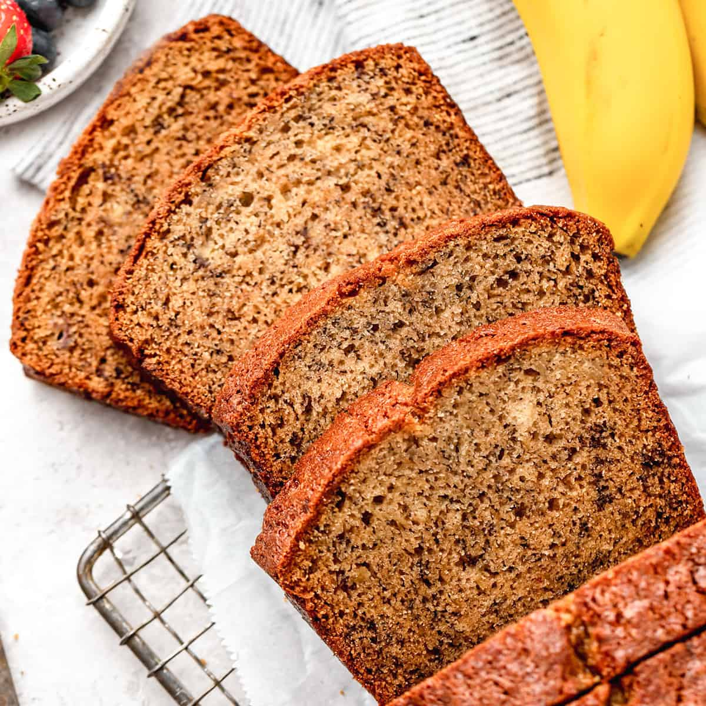

'Naner Bread

What're We Making?
This is the recipe for Banana Bread that my just happens to be one of my mother's most sought after recipes.
I personally cannot stand this bread, but that is a personal preference and in no way related to quality. I have heard that in the Banana Bread circles, this is one of the better recipes.
Ingredients
- 1/4 Cup of Shortening or Butter (Chef's Choice)
- 3/4 Cup of Sugar
- 1 Egg
- 1 tsp of Vanilla Extract
- 3 Mashed Bananas
- 1 tsp of Baking *Soda*
- 1 1/2 Cups of Flour
Directions
- Preheat oven to 350 degrees. Grease your desired pans, with either butter or shortening, and set aside.
- Don't use aerosol pan lube, it will cause the bread to stick to the pan (no bueno).
- In a bowl, cream the butter and sugar together.
- Add in the egg, vanilla, and bananas. Make sure to mix well.
- Mix in the flour and the baking *soda*
- Pour the batter into your prepared pans, and bake at 350 for 45-50 minutes or until toothpick is clean when stabbed into the center of the bread.
- Allow bread to cool for 15 minutes in the pan, then transfer on a rack to finish cooling
- Serve with your toppings of choice! Enjoy!